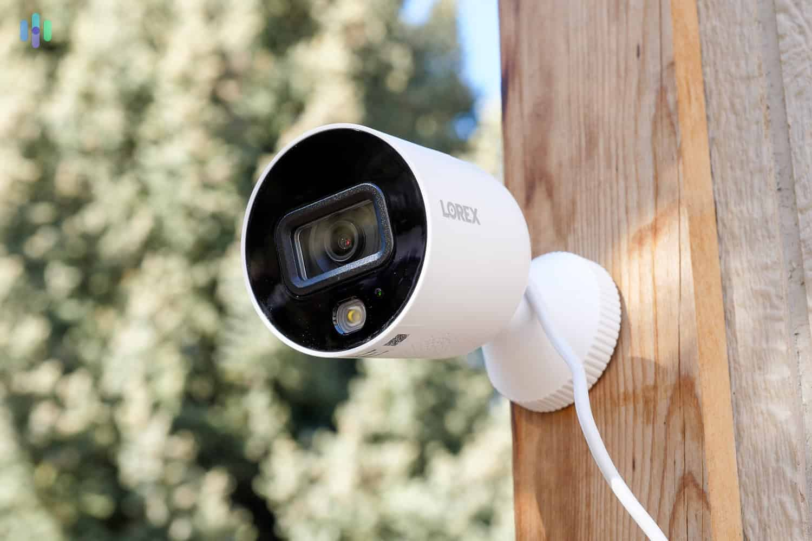

What We Offer

Security Cameras
High-definition CCTV cameras with remote monitoring to keep your property safe 24/7.

Electric Fences
Durable and reliable electric fencing systems designed to deter intruders and protect boundaries.

Automated Gates
Smart and secure gate automation solutions for homes, businesses, and institutions.